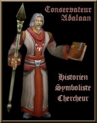

Récits Légendes de Kirin Tor Personnages Célébrités Guildes
Outils Calendrier Calendrier Illustré Mod d'interface
Informations Historiens FAQ Liens Crédits
Les légendes de Kirin Tor
==> Afficher les personnages de Wellrythorn
Wellrythorn
 Age : 27
Age : 27
Sexe : Homme
Race : Humain
Faction : Alliance
Formation : Paladin
Description : ==========================
Parents :
-Père : Sir Wellros
-Mère : Gwenden Bonie
Frères :
-Welldarrynn
-Wellrya
Soeur :
-Glaeden
Demi frère :
-Wellfow
Cousin :
-Delagoth Bonie
-Welldarîs
Tante :
-Hanna Bonie
BG mis à jour en préparation :)
Ancien texte mis dans les récits (2005)
Plus d'infos sur Wellrythorn >>>
Lire les 10 récits de Wellrythorn >>>
Draektar
Age : 44Sexe : Homme
Race : Orc
Faction : Horde
Formation : Chasseur
Plus d'infos sur Draektar >>>
Lire le récit de Draektar >>>
Kaeldras
 Sexe : Homme
Sexe : Homme
Race : Elfe
Faction : Alliance
Formation : Voleur
Description : -=Kaeldras est un Elfe de Sang=-
(pas de possibilité de choisir la race Elfe de sang encore sur le site)
Kaeldras est un techno-elfe et ancien membre du commando Royal de Lune d'Argent. Suite à une mission ratée, les survivants blessés fûrent envoyés dans un laboratoire secret dans les sous-sol de la cité de Quel'Thalas afin de les sauver. Un projet longtemps étudié par les mages et ingénieurs elfes de sang a donc été appliqué. Les organes et membres du corps trop fragiles et blessés fûrent remplacés par de la technologie de pointe elfe, mélangé à de la puissance arcanique des mage afin d'alimenter en énergie ces parties mécaniques. Ces elfes devinrent mi-machine, mi-elfe. Ce sont ceux que l'on nomme les techno-elfes. Ils ont cependant un grand besoin en cristaux de mana pour alimenter leurs organes artificiels et leurs capacités. Ce sont d'excellents assassins, doués d'un camouflage hors du commun et d'une précision accrue. Des soldats d'élite donc.
Plus d'infos sur Kaeldras >>>
Lire les 3 récits de Kaeldras >>>
Delagoth
Age : 18Sexe : Homme
Race : Humain
Faction : Alliance
Formation : Démoniste
Description : Jeune Corsaire pour le compte de son cousin, le Capitaine Wellrythorn.
Plus d'infos sur Delagoth >>>
Hertimus
Age : 31Sexe : Homme
Race : Humain
Faction : Alliance
Formation : Guerrier
Description : Ex pilote de Gyrocoptère dans l'armée du Nord, puis ancien Gladiateur de Lordaeron...
Plus d'infos sur Hertimus >>>
Dolania
Age : 19Sexe : Femme
Race : Humain
Faction : Alliance
Formation : Prêtre
Plus d'infos sur Dolania >>>
Lire les 2 récits de Dolania >>>
Conservateur
Age : 67Sexe : Homme
Race : Humain
Faction : Alliance
Formation : Prêtre
Description : Historien de la Bibliothèque Royale de Stormwind
Conservateur agréé, diplomé des Ecoles de Lettres Supérieures de Lordaeron.
Vît actuellement a Stormwind.
Plus d'infos sur Conservateur >>>
==> Voir la galerie d'images de Wellrythorn